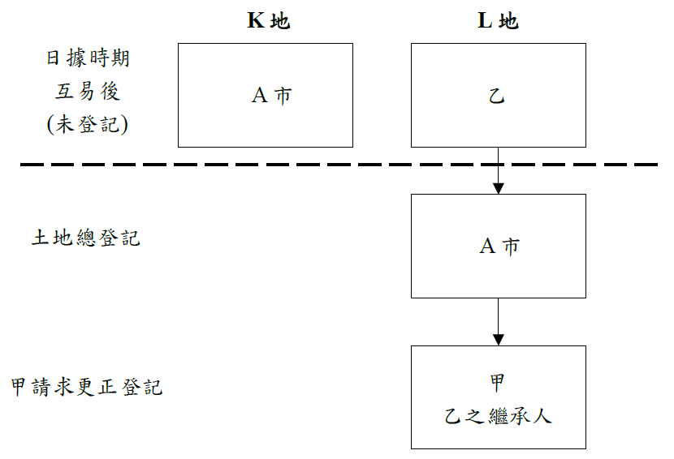

更正登記應不妨害原登記同一性之相關案例
案例：
甲主張其曾祖父乙於日據時期與A市公所簽訂「以地易地」之承諾書，由乙將所有之K地與A市所有同地段之L地約300坪土地互易移轉；嗣L地迭經分割，乙因互易取得並入住之土地經測量即在L土地範圍內，是依上述土地互易承諾書，此部分土地應屬乙所有，惟辦理總登記時，卻登記土地所有權人為A市，爰依土地法第69條及土地登記規則第144條規定，請求地政事務所辦理更正登記或塗銷登記，將該部分土地移轉予甲等人。試問是否有理由？
[圖片1]
判決重點：
-
按土地登記之目的，在於確立地籍，保護產權，藉以維持不動產交易安全，並為推行或制定土地政策之依據。故已登記完畢之土地權利，若登記錯誤、遺漏或虛偽，應予以更正，以杜絕弊端，並有助公示原則之確立。
-
土地法第69條所稱「登記錯誤之更正」，以不涉及私權爭執，且不妨害原登記之同一性者為限，亦即僅限「登記原因證明文件所載之內容不符」或「應登記事項漏未登記」之情形而言，並未涉及權利主體之變動，否則根據土地登記規則第7條規定，必須經由司法審判程序，始得塗銷或變更。殊非可依規定申請地政機關更正登記，以變更原登記所示之法律關係。
-
基此法理，內政部訂頒之更正登記法令補充規定第6點規定：「申請更正登記，如更正登記後之權利主體、種類、範圍或標的與原登記原因證明文件所載不符者，有違登記之同一性，應不予受理。」第7點規定：「更正登記以不妨害原登記之同一性為限，若登記以外之人對於登記所示之法律關係有所爭執，則應訴由司法機關審判，以資解決。」亦明揭上述意旨。
-
是更正登記，無論依職權或依聲請，均以不妨害原登記之同一性為限。亦即更正前後之標的物、權利主體及法律關係，均須相同。若更正登記之結果，使原登記關係人之土地權利發生變動或損害，則已妨害原登記之同一性，不在更正登記之範圍內。
-
因此，甲主張其曾祖父乙於日據時期與A市公所就L地簽訂承諾書互易移轉一節，因系爭土地現所有權人為A市，管理人為A市公所，甲請求將系爭土地所有權人更正登記為甲等人，顯已違反登記同一性之要件，於法不合。
資料來源： 臺中高等行政法院109年度訴字第195號判決 最高行政法院110年度上字第128號裁定
這篇文章考過哪些題目
讀完試著自己作答，再點進去對答案。依文字相似度自動比對，不一定完全對應。
- 109 地特三等《土地登記》第 3 題
甲所有一地於多年前因流失而浮覆，甲於今(109)年5月間至登記機關申辦該地之回復所有權登記，試按土地登記規則等規定，說明…
文章圖片

注：本文圖片存放於 ./images/ 目錄下